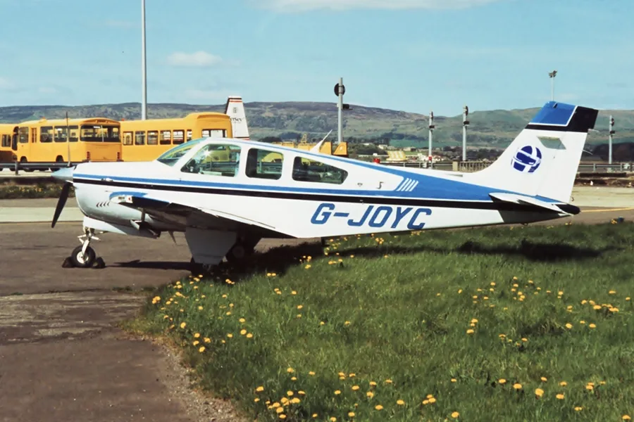

Beech Bonanza / Diamond DA20 Midair Collision
A private pilot and a flight instructor with her student collided on final approach at a non-towered Georgia airport September 7, 2016, 10:48 EDT · Final approach, runway 35, West Georgia Regional Airport (CTJ), Carrollton, GeorgiaMid-air collision
No survivors, both aircraft
Case summary
The Bonanza pilot's radio was still tuned to a CTAF frequency the airport had retired five years earlier — he never heard the Diamond's calls.

Private pilot, personal flight
What happened
Source: NTSB Final Report (excerpt)The Diamond flight instructor and student pilot were in the traffic pattern at the non-towered airport practicing landings. The Beech pilot entered the traffic pattern on an extended left downwind leg with the intention of landing. Pilots of other airplanes in the pattern reported that the Diamond instructor was making standard traffic pattern callouts on the common traffic advisory frequency (CTAF); however, the Beech pilot was not transmitting on the CTAF. Witness observations, radar data, GPS data, and examination of the wreckage of the two airplanes revealed that, while both airplanes were on final approach for landing, the Beech overtook the Diamond from above and behind. The landing gear of the Beech struck the horizontal stabilizer and elevator of the Diamond, and then both airplanes abruptly descended into the terrain short of the runway. Testing of the Beech's VHF communications radio revealed that it was set to an old CTAF frequency for the airport that had been changed about 5 years before the accident — a local airport frequency card dated 7 years before the accident, found in the Beech's cockpit, still listed that old frequency.
Why it happened
Source: NTSB Final Report"The failure of the Beech pilot to see and avoid the Diamond that was in front of and below his airplane on final approach and his use of an incorrect radio communication frequency for the airport."
- Beech pilot's VHF radio was tuned to an outdated CTAF frequency (122.7 MHz) that the airport had retired about 5 years before the accident
- A laminated local-area frequency card in the Beech's cockpit, dated 2009, still listed the obsolete CTAF frequency
- Beech pilot was not transmitting or apparently monitoring the correct CTAF (122.975 MHz), so other pattern traffic never heard his position
- Failure of the Beech pilot to see and avoid the Diamond, which was ahead of and below him on the same final approach course
- Closing speed: the Beech was overtaking the slower Diamond by roughly 50 knots on the downwind and final legs
- Non-towered airport with no ATC separation service — CTAF communication and visual scanning were the only safety barriers in the pattern
Photos & media (3)
NTSB docket photos (ERA16FA312) and reference photos of both aircraft types (Wikimedia Commons)The Diamond flight instructor and student pilot were in the traffic pattern at the non-towered airport practicing landings. The Beech pilot entered the traffic pattern on an extended left downwind leg with the intention of landing. Pilots of other airplanes in the pattern reported that the Diamond instructor was making standard traffic pattern callouts on the common traffic advisory frequency (CTAF); however, the Beech pilot was not transmitting on the CTAF. Witness observations, radar data, GPS data, and examination of the wreckage of the two airplanes revealed that, while both airplanes were on final approach for landing, the Beech overtook the Diamond from above and behind. The landing gear of the Beech struck the horizontal stabilizer and elevator of the Diamond, and then both airplanes abruptly descended into the terrain short of the runway. Testing of the Beech's VHF communications radio revealed that it was set to an old CTAF frequency for the airport that had been changed about 5 years before the accident — a local airport frequency card dated 7 years before the accident, found in the Beech's cockpit, still listed that old frequency.
"The failure of the Beech pilot to see and avoid the Diamond that was in front of and below his airplane on final approach and his use of an incorrect radio communication frequency for the airport."
- Beech pilot's VHF radio was tuned to an outdated CTAF frequency (122.7 MHz) that the airport had retired about 5 years before the accident
- A laminated local-area frequency card in the Beech's cockpit, dated 2009, still listed the obsolete CTAF frequency
- Beech pilot was not transmitting or apparently monitoring the correct CTAF (122.975 MHz), so other pattern traffic never heard his position
- Failure of the Beech pilot to see and avoid the Diamond, which was ahead of and below him on the same final approach course
- Closing speed: the Beech was overtaking the slower Diamond by roughly 50 knots on the downwind and final legs
- Non-towered airport with no ATC separation service — CTAF communication and visual scanning were the only safety barriers in the pattern